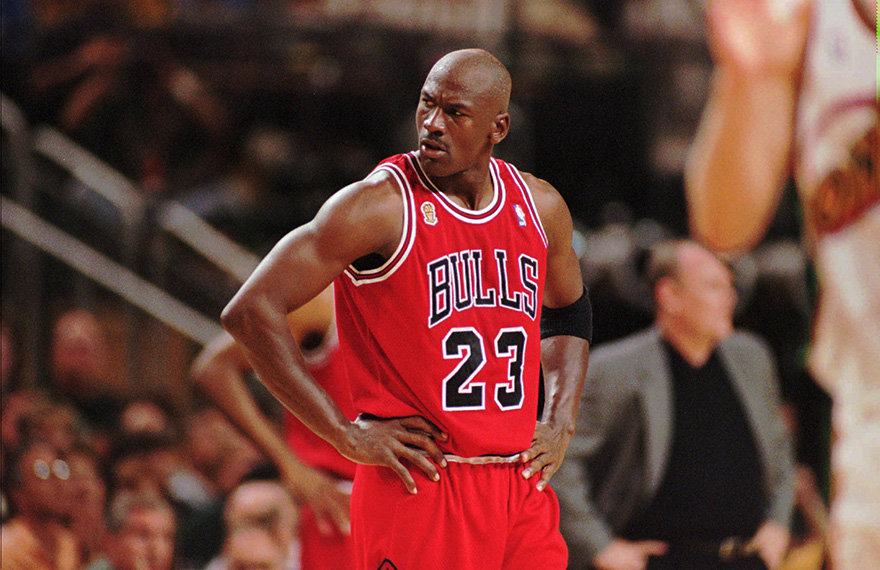
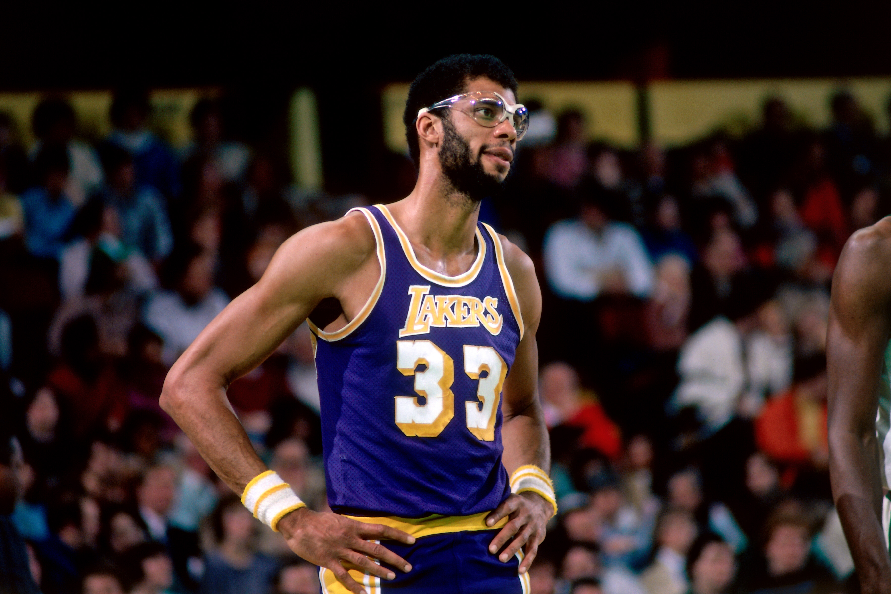

NBAの歴史
ここではNBAの歴史を伝えていきたいと思っています！
今回はNBAの歴代通算得点TOP5選手を紹介していきたいと思います！
第5位 通算得点32,292点 試合数1,072試合
マイケル・ジョーダン Michael Jeffrey Jordan

バスケの神様、スラムダンクの影響で日本で有名な選手
圧倒的に少ない試合数で歴代5位の座にいる最強のスコアラー
6度の優勝の内2回の3連覇を誇る、NBA最強の男である
第4位 通算得点32,543点 試合数1,198試合
レブロン・ジェームズ LeBron Raymone James

長年NBAを支えてきた現役最強オールラウンダー
高校生の時から「"The Chosen One"(選ばれし人）」と呼ばれ、プレッシャーがすごい中
ハイレベルでパス、ドリブル、シュート、リバウンドをこなす選手
今もなおプレーしており、将来的にはこのリストの1位となるだろう
第3位 通算得点33,643点 試合数1,346試合
コービー・ブライアント Kobe Bean Bryant
第2位 通算得点36,928点 試合数1,476試合
カール・マローン Karl Anthony Malone
第1位 通算得点38,387点 試合数1,560試合
カリーム・アブドゥル＝ジャバー Kareem Abdul-Jabbar
